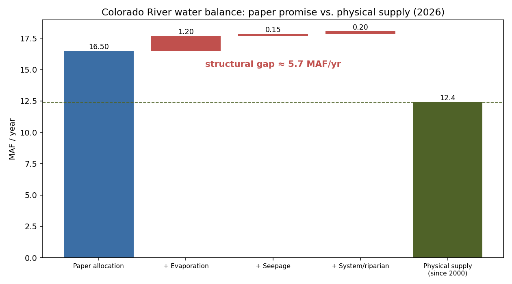
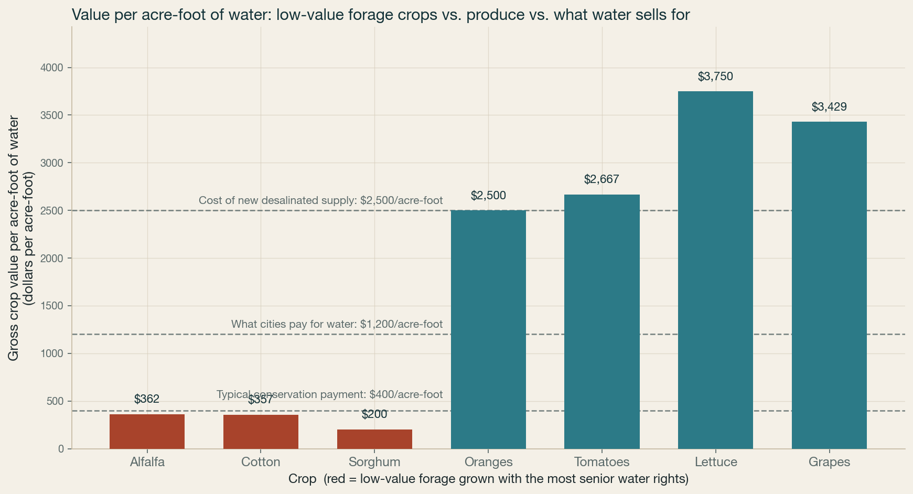
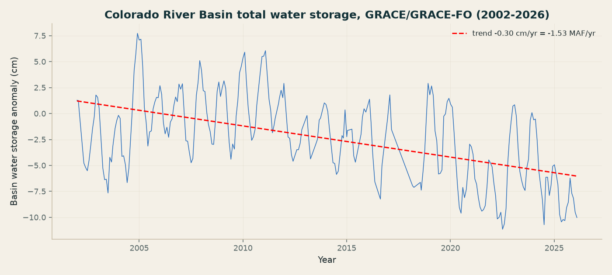
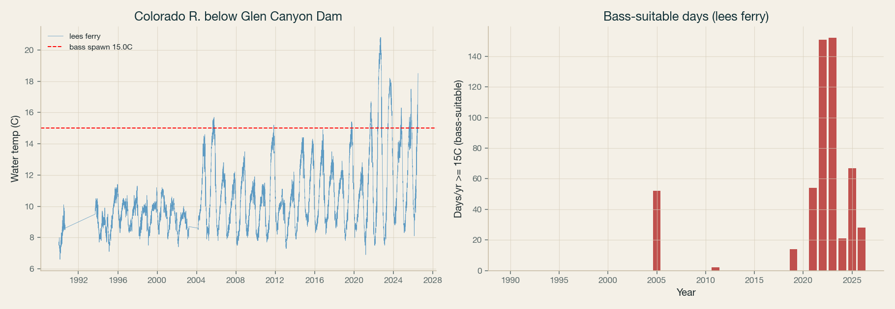
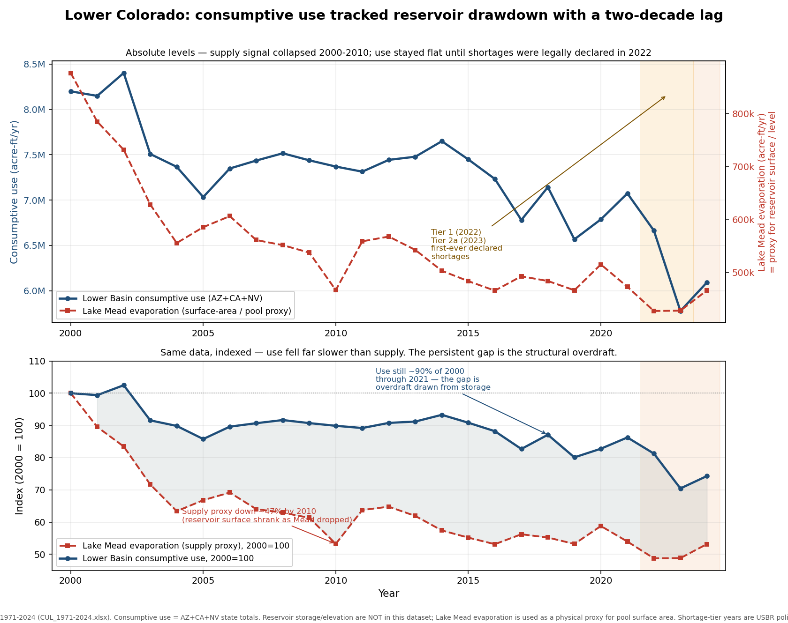
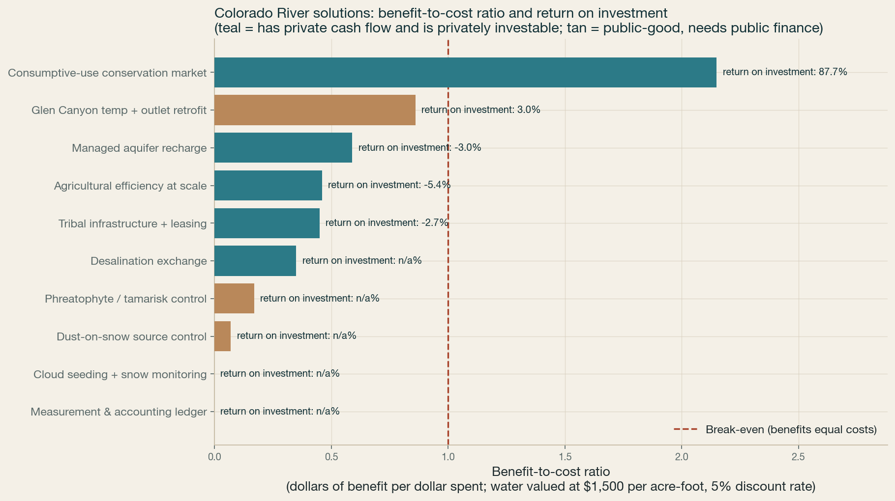
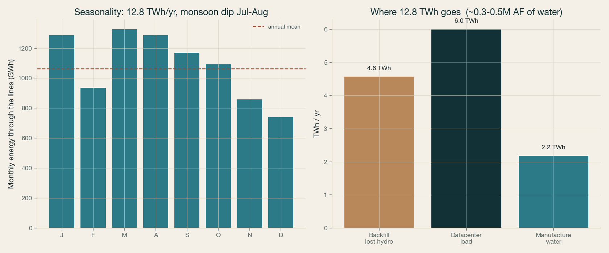
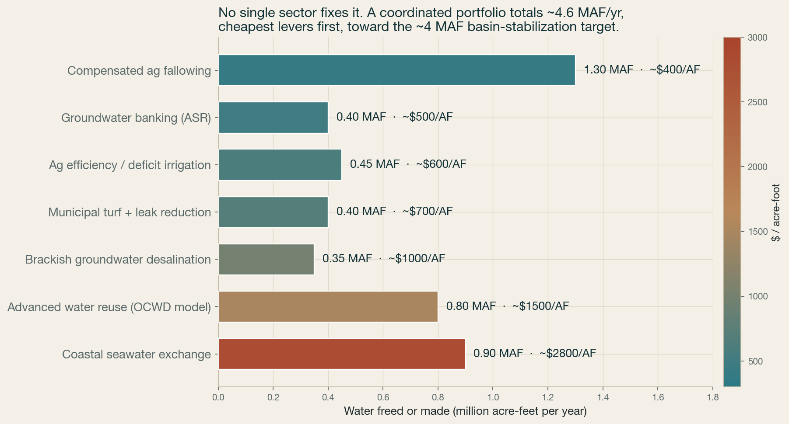

This repository is an independent Colorado River Basin analysis.
It uses public data only. No private datasets. No hidden assumptions that cannot be traced back to a source or a calculation in this repo.
The goal is order-of-magnitude decision-grade analysis. That means enough accuracy to compare options, test claims, and check whether a proposal clears a basic financial or physical threshold. It is not a litigation record. It is not a final operations model. It is not a substitute for agency accounting.
The work is built for people who will check the math. If a number matters, it should either be directly verified, transparently estimated, or clearly marked aspirational.
Data source. Public Colorado River accounting records, reservoir evaporation estimates, Glen Canyon seepage estimates, and published riparian evapotranspiration terms.
Method. We reconstruct a basin-level loss stack from the public numbers, then compare those losses with paper allocations and realized supply since 2000. The point is not to claim every loss is measured with the same precision. The point is to show that the structural gap is large enough that unpriced losses matter to operations and policy.
Headline number. Since 2000, supply is 12.4 MAF against a paper allocation of 16.5 MAF. Reconstructed reservoir evaporation is 1.204 MAF. The loss stack used here is 1.2 MAF of reservoir evaporation, 0.15 MAF of Glen Canyon seepage, and 0.2 MAF of system riparian ET, for total unpriced losses of 1.55 MAF. The structural gap versus paper allocation is 5.65 MAF. The stabilizing cut used in the accounting exercise is 3.0 MAF.
Key uncertainty. The biggest uncertainty is attribution. Evaporation, seepage, and riparian ET are real. How much of each should be charged to which entity is a rule choice, not a physical measurement alone.
Data source. The valuation scenarios in the financial model and the option-level capital and benefit estimates in the repository.
Method. We value freed water at avoided marginal supply. That is the central pricing rule. We then test the same options at 800, 1500, and 2500 dollars per acre-foot, using the 30 year horizon and the stated discount rates. The intent is to see which projects survive a skeptic’s price test, not to set a market-clearing basin price.
Headline number. The central water value used in the model is 1500 dollars per acre-foot. Under that central value, the consumptive-use conservation market has BCR 2.15. Agricultural efficiency at scale has BCR 0.46. Desalination exchange has BCR 0.35. Managed aquifer recharge has BCR 0.59. Tribal infrastructure plus leasing has BCR 0.70.
Key uncertainty. The valuation is highly sensitive to the marginal supply that water displaces. If the displaced alternative is cheap, the water value is low. If the displaced alternative is expensive, the water value is high. This is why the repository keeps the valuation range explicit.
Data source. GRACE and GLDAS based terrestrial water storage work over the Colorado River Basin footprint, using the basin area and grid cell structure in the model.
Method. We estimate basin-scale terrestrial water storage trend from satellite-derived storage change over the basin area, then compare early and late period trends to test acceleration. We also compare the result to a published benchmark to check plausibility. The basin area used is 629100 km2 and the grid has 268 cells.
Headline number. Terrestrial water storage trends at -0.301 cm per year, which is -1.53 MAF per year. Total TWS loss from 2002 to 2026 is 46.3 km3, or 37.6 MAF. The early half trend is 0.141 cm per year and the late half trend is -0.49 cm per year. The acceleration ratio late over early is -3.46. The implied groundwater loss is 24.4 MAF using a groundwater share of 0.65.
Key uncertainty. GRACE based basin storage is robust for large area change, but not for precise attribution to surface water versus soil moisture versus groundwater without a model. The groundwater share is literature based, not directly observed from satellite gravity alone.
Data source. Lees Ferry temperature data from 1990 to 2026.
Method. We use Lees Ferry as the primary series because it is the site with data in this analysis. We count days at or above the 15.0 C bass spawn threshold, then examine the trend and the post-2015 shift. We also record the 2022 extreme year.
Headline number. Days at or above 15.0 C trend upward by 1.8 days per year. Summer mean temperature rises by 1.6 C per decade. Mean days at or above 15.0 C rise from 2.3 before 2015 to 40.6 from 2015 onward. In 2022, Lees Ferry had 130 days at or above 16 C.
Key uncertainty. The time series is site specific. Lees Ferry is the primary series here, but it does not represent every reach below Glen Canyon Dam. Temperature effects also depend on discharge pattern, mixing, and outlet operations.
We model a consumptive-use conservation market that pays for verified water savings.
Verification is done with satellite ET, shepherding, and a holdback. The holdback is about 25 percent to cover underperformance and measurement risk. The method is conservative on purpose. Savings must be visible in the remote sensing record or in linked field accounting before they count as bankable.
The economics are tested against the water value range and the discount rates in the assumptions ledger. Under the central case, the conservation market is the only option in the set that clears robustly across the valuation range.
We model a PV plus storage buildout that uses stranded transmission headroom. The deployment model starts from available interconnection and transmission capacity, then fills that headroom with projects sized to the remaining margin. A head-based backtest checks whether the implied deployment is consistent with observed or inferred headroom constraints. The purpose is not to forecast a utility plan. The purpose is to test whether the physical envelope can support the buildout.
The package level finance result is shown in the blue bond section. At the package level, capex is 15.7 B. Revenue-backed capex is 12.2 B. Assessment-backed capex is 3.5 B. The model then tests debt service coverage across water values and discount rates.
| Quantity | Value used | Basis | Verified / Estimated / Aspirational |
|---|---|---|---|
| Water value per acre-foot, low | 800 | Scenario input in finance model | Estimated |
| Water value per acre-foot, central | 1500 | Scenario input in finance model | Estimated |
| Water value per acre-foot, high | 2500 | Scenario input in finance model | Estimated |
| Discount rate, low | 0.03 | Scenario input in finance model | Verified |
| Discount rate, central | 0.05 | Scenario input in finance model | Verified |
| Discount rate, high | 0.07 | Scenario input in finance model | Verified |
| Conservation market capex | 0.3 B | Option model input | Verified |
| Conservation market cost per acre-foot | 697 | Breakeven water value per acre-foot | Estimated |
| Deficit magnitude, structural gap versus paper allocation | 5.65 MAF | 16.5 MAF paper allocation minus 12.4 MAF supply and related accounting terms | Estimated |
| Stabilizing cut used in accounting exercise | 3.0 MAF | Scenario input in loss accounting rule set | Estimated |
| Transmission headroom | Not assigned a value here | Must come from the deployment model and head-based backtest in the repo | Aspirational |
| Basin consumptive use | 13.0 MAF | Blue bond assumption set | Verified |
| Blue bond package capex | 15.7 B | Finance model package total | Verified |
| Revenue-backed capex | 12.2 B | Finance model split | Verified |
| Assessment-backed capex | 3.5 B | Finance model split | Verified |
| Assessment surcharge per AF, r4 | 16 | Finance model assumption | Verified |
| Assessment surcharge per AF, r5 | 18 | Finance model assumption | Verified |
| Assessment surcharge per AF, r6 | 20 | Finance model assumption | Verified |
| Social benefit per year, context only | 1.88 B per yr | Context only, not collectible revenue | Verified |
| Glen Canyon bass threshold | 15.0 C | Temperature analysis threshold | Verified |
| Lees Ferry days at or above 15 C trend | 1.8 days per year | Time series trend | Verified |
| Summer mean temperature trend | 1.6 C per decade | Time series trend | Verified |
| GRACE and GLDAS basin area | 629100 km2 | Basin geometry used in model | Verified |
| GRACE and GLDAS grid cells | 268 | Model grid | Verified |
| TWS trend | -0.301 cm per year | Satellite storage estimate | Verified |
| TWS loss 2002 to 2026 | 37.6 MAF | Satellite storage estimate | Verified |
| Groundwater share | 0.65 | Literature based share | Estimated |
| Implied groundwater loss | 24.4 MAF | Derived from TWS loss and groundwater share | Estimated |
| Reservoir evaporation | 1.2 MAF | Reconstructed loss term | Estimated |
| Glen Canyon seepage | 0.15 MAF | Reconstructed loss term | Estimated |
| System riparian ET | 0.2 MAF | Reconstructed loss term | Estimated |
We corrected several load bearing claims.
The Glen Canyon temperature statement was corrected. The site now uses the documented Lees Ferry series and the 15.0 C threshold in this analysis. The old claim about a roughly 40 day crossing pattern did not hold.
The Upper Basin delivery framing was corrected. The 1.5 MAF figure belongs to a Lower Basin use reduction concept, not an Upper Basin delivery obligation.
The Mexico volume framing was corrected. The 0.25 MAF figure was a reserve cap under Minute 323, not a successor annual flow under Minute 330.
The conservation market numbers were corrected. We removed the inconsistent mix of $3B, 0.50 MAF, and 600 dollars per AF. The current model uses the explicit option and valuation inputs in the financial table.
The agricultural efficiency and other option figures were checked against the claim ledger and reduced to the numbers supported by the repository math.
This repository is basin scale. It is not parcel scale, canal turnout scale, or reservoir rule curve scale.
The accounting in M1 is a rule choice layered on top of physical losses. A different charging rule will move costs across parties, even if the physical losses stay the same.
The valuation in M2 is sensitive to the avoided alternative. If a reviewer wants a different marginal supply, the model should be rerun with that assumption and the delta shown.
The GRACE and GLDAS result in M3 is strong for basin total change. It is weaker for attribution. Extending it means adding independent groundwater observations, storage compartment separation, and uncertainty bands.
The Glen Canyon temperature work in M4 should be extended with reach specific temperature data, discharge data, and operation scenarios. That would let the analysis move from trend detection to operational attribution.
The proposal models should be extended with open notebooks, source linked ET verification, explicit transmission datasets, and a posted backtest for every deployment claim. If a figure is not reproduced from public data, it should not be treated as settled.
Each figure is generated by a script in analysis/ from the data in the repo. Click to enlarge.







